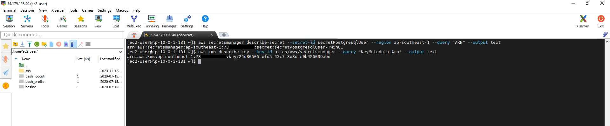
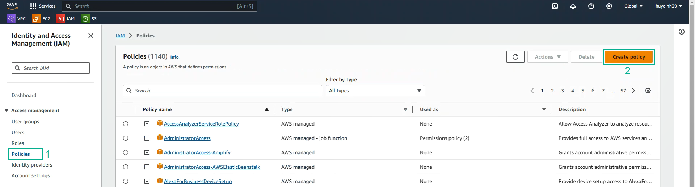
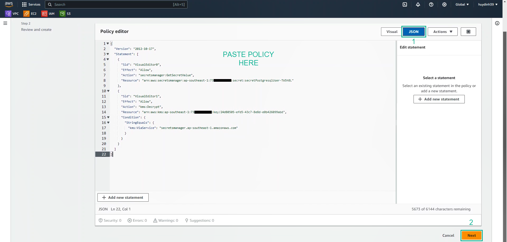
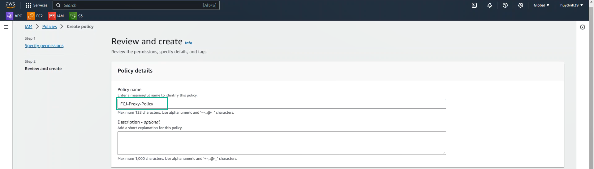

aws secretsmanager describe-secret --secret-id secretPostgresqlUser --region ap-southeast-1 --query "ARN" --output text
aws kms describe-key --key-id alias/aws/secretsmanager --query "KeyMetadata.Arn" --output text


{
"Version": "2012-10-17",
"Statement": [
{
"Sid": "VisualEditor0",
"Effect": "Allow",
"Action": "secretsmanager:GetSecretValue",
"Resource": "<CHANGE_YOUR_SECRET_ARN_HERE>"
},
{
"Sid": "VisualEditor1",
"Effect": "Allow",
"Action": "kms:Decrypt",
"Resource": "<CHANGE_YOUR_KEY_ARN_HERE>",
"Condition": {
"StringEquals": {
"kms:ViaService": "secretsmanager.ap-southeast-1.amazonaws.com"
}
}
}
]
}


Các quyền được cấp cho chính sách FCJ-Proxy-Policy
+Được phép GetSecretValue đối với secretPostgresqlUser được lưu trữ trong AWS Secrets Manager
+Cho phép dịch vụ AWS Secrets Manager sử dụng aws/secretsmanager để thực hiện thao tác Decrypt